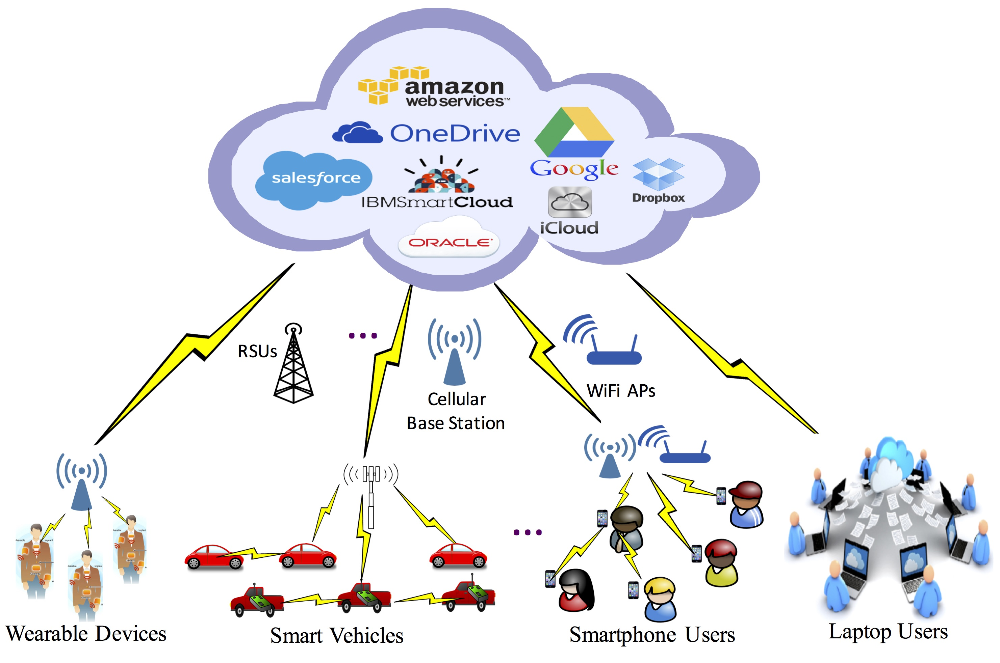

Cloud Computing Services
The three major Cloud Computing Offerings are
- Software as a Service (SaaS)
- Platform as a Service (PaaS)
- Infrastructure as a Service (IaaS)
Different business use some or all of these components according to their requirement.

SaaS (Software as a Service)
SaaS or software as a service is a software distribution model in which applications are hosted by a vendor or service provider and made available to customers over a network (internet). SaaS is becoming an increasingly prevalent delivery model as underlying technologies that supports Service Oriented Architecture (SOA) or Web Services. Through internet this service is available to users anywhere in the world.
PaaS (Platform as a Service)
Platform as a service, is referred as PaaS, it provides a platform and environment to allow developers to build applications and services. This service is hosted in the cloud and accessed by the users via internet.PaaS services are constantly updated & new features added. Software developers, web developers and business can benefit from PaaS. It provides platform to support application development. It includes software support and management services, storage, networking, deploying, testing, collaborating, hosting and maintaining applications.
IaaS (Infrastructure as a Service)
IaaS (Infrastructure As A Service) is one of the fundamental service model of cloud computing alongside PaaS( Platform as a Service). It provides access to computing resources in a virtualized environment “the cloud” on internet. It provides computing infrastructure like virtual server space, network connections, bandwidth, load balancers and IP addresses. The pool of hardware resource is extracted from multiple servers and networks usually distributed across numerous data centers. This provides redundancy and reliability to IaaS.